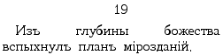
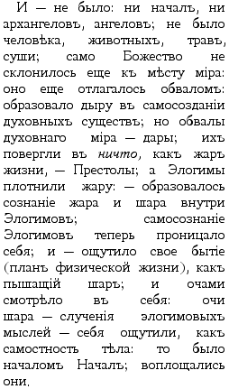
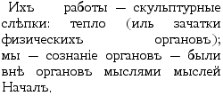
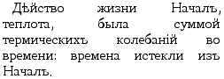
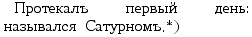
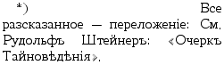

Glossolalia (Section 19)

Out of the depths of the deity a plan for the universe blazed up.

And -- there were: no primal beginnings, no archangels, angels; there were no human being, animals, grasses, dry land; the Deity itself had not yet inclined to the place of the world: it was still being postponed by the collapse: it formed a hole in the self-creation of spiritual beings; but the collapses of the spiritual world are -- gifts[dary]; they turned them into nothingness, like the heat of life, -- the Thrones; and the Elohim condensed the heat:-- a consciousness of heat and of the sphere formed inside the Elohim; the selfconsciousness of the Elohim now penetrated itself; and -- sensed its own being (the plan of physical life), like a blazing sphere; and it looked with its eyes into itself: the eyes of the sphere -- the coincidences of Elohimic thoughts -- sensed themselves, like the selfness of the body: this was the beginning of the Primal Beginnings they were incarnated.

Their works are -- sculptured molds: warmth (or the conceptions of the physical organs); we -- the consciousness of the organs -- were outside of the organs as thoughts of the thoughts of the Primal Beginnings.

The activity of life of the Primal Beginnings, warmth, was the sum of thermic fluctuations in time: times flowed out of the Primal Beginnings.

The first day flowed by: it was called Saturn.*

* All that has been told is -- a restatement. Cf. Rudolf Steiner, Occult Science.